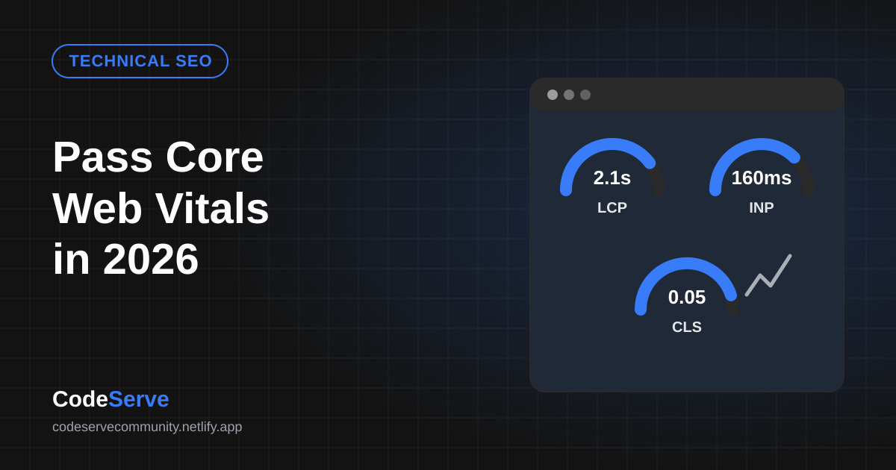
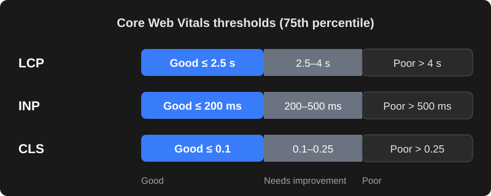

What are Core Web Vitals?
Core Web Vitals are three measurements Google uses to describe how a page feels to real visitors: how fast the main content appears, how quickly the page responds when someone taps or types, and whether things jump around while it loads. They are part of Google's page experience signals and are reported for your site in Google Search Console.
The important word is real. Google's assessment is based on data collected from actual Chrome users visiting your pages over the last 28 days — mostly on mid-range phones and mobile networks, not on your office Wi-Fi.
The three metrics and their "good" thresholds

| Metric | What it measures | Good | Needs improvement | Poor |
|---|---|---|---|---|
| LCP – Largest Contentful Paint | When the biggest visible element (usually a hero image or heading) finishes rendering. | ≤ 2.5 s | 2.5 – 4 s | > 4 s |
| INP – Interaction to Next Paint | How quickly the page visually responds to taps, clicks and key presses throughout the visit. | ≤ 200 ms | 200 – 500 ms | > 500 ms |
| CLS – Cumulative Layout Shift | How much content unexpectedly moves around while the page loads. | ≤ 0.1 | 0.1 – 0.25 | > 0.25 |
A page "passes" when at least 75% of visits meet the good threshold for all three. INP replaced the older First Input Delay (FID) metric in March 2024, so guides that still talk about FID are out of date.
How to measure your site (free tools)
- PageSpeed Insights (pagespeed.web.dev) — paste a URL. The top section shows real-user data (if your site has enough traffic); the bottom section is a Lighthouse lab test with specific suggestions.
- Google Search Console → Core Web Vitals report — groups similar pages and tells you which ones are Good, Need improvement or Poor on mobile and desktop.
- Chrome DevTools — the Performance panel shows live LCP, INP and CLS as you interact with the page, and the Lighthouse panel runs the same lab test locally.
Lab data vs real-user data
Lab data (Lighthouse) is a single simulated load under fixed conditions. It is great for debugging but can differ from what users experience. Field data (the Chrome User Experience Report) is what Google uses for its assessment. If your site is new or low-traffic there may be no field data yet; use lab scores as a guide until it appears. Also note that INP needs real interactions, so lab tools use Total Blocking Time as a stand-in.
How to fix a slow LCP
LCP is usually slow for one of four reasons: a slow server, render-blocking CSS/JS, a heavy hero image, or the hero image being discovered late.
- Make the server respond faster. Cheap shared hosting is often the biggest bottleneck. Use good hosting, server-side caching and a CDN so the first byte arrives quickly.
- Optimise the hero image. Serve WebP or AVIF, size it for the screen (don't send a 3000px image to a phone), and compress it.
- Don't lazy-load the hero image. Lazy-load images below the fold, but load the LCP image immediately and hint its priority:
<link rel="preload" as="image" href="/images/hero.webp" fetchpriority="high">
<img src="/images/hero.webp" width="1200" height="630"
fetchpriority="high" alt="Your product or service">- Reduce render-blocking resources. Inline critical CSS, defer non-critical JavaScript and remove unused CSS from page builders and plugins.
- Load fonts efficiently. Use fewer font weights, self-host where possible, preload the main font and use
font-display: swap.
How to fix a poor INP
INP gets worse when the browser's main thread is busy running JavaScript, so it can't respond to a tap. Common culprits are heavy page builders, sliders, chat widgets, multiple tracking scripts and large frameworks loaded on every page.
- Remove scripts you don't need and load third-party widgets (chat, reviews, maps) only when the user scrolls near them or clicks.
- Break long JavaScript tasks into smaller pieces and avoid doing heavy work inside click handlers.
- Load analytics and marketing tags through a tag manager with care — each tag adds main-thread work.
- Avoid huge DOM sizes (thousands of nested elements), which make every update slower.
How to fix layout shift (CLS)
- Always set width and height (or CSS
aspect-ratio) on images, videos and iframes so the browser reserves space. - Reserve space for ads, banners and embeds instead of letting them push content down after loading.
- Don't insert content above existing content — cookie bars and promo strips should overlay or have reserved space.
- Match fallback fonts to your web font's size to reduce the jump when the font loads.
WordPress-specific checklist
| Area | What to do |
|---|---|
| Hosting | Use hosting with recent PHP, server caching and enough resources; avoid overcrowded shared plans for business sites. |
| Caching | Use one well-configured caching plugin (page cache, browser cache, minification) — not three overlapping ones. |
| Images | Convert to WebP/AVIF on upload, generate correct sizes, lazy-load below-the-fold images. |
| Theme & builder | Lightweight themes and fewer builder add-ons; disable unused widgets and features. |
| Plugins | Audit regularly — each plugin can add CSS/JS on every page. Remove what you don't use. |
| CDN | Serve static files from a CDN with a location close to your Indian visitors. |
| WooCommerce | Disable cart fragments on pages that don't need them; optimise product image sizes. |
Custom-built sites (React, Next.js, Laravel and so on) have different levers: server-side rendering or static generation, code-splitting, image components that output modern formats, and careful use of client-side JavaScript.
Hosting and CDN for Indian visitors
Where your server sits matters. If most customers are in India but the site is hosted on a small server in another continent, every request travels further before the first byte arrives. That delay shows up directly in LCP.
- Choose a nearby data centre. Many hosts and cloud providers offer regions in India (for example Mumbai) or nearby Singapore. For an Indian audience, these usually respond faster than US or European regions.
- Use a CDN. A content delivery network keeps copies of images, CSS and JavaScript on servers close to visitors. Some CDNs can also cache full HTML pages, which helps a lot for brochure sites and blogs.
- Check Time to First Byte (TTFB). PageSpeed Insights and DevTools show it. If TTFB alone is close to a second, no amount of image optimisation will get LCP comfortably under 2.5 seconds — fix the server first.
- Avoid overloaded shared plans. Very cheap plans often pack hundreds of sites onto one server. A modest upgrade to better hosting is often the single biggest speed improvement a small business can make.
- Keep software current. Newer PHP versions, database versions and HTTP/2 or HTTP/3 support all help pages load faster at no extra cost.
A 30-minute speed audit you can do today
- List your five most important pages — homepage, top service or product pages, contact page and your highest-traffic blog post.
- Run each through PageSpeed Insights on mobile. Note whether field data passes and write down LCP, INP and CLS.
- Find the LCP element. The report names it. If it is an image, check its file size and format; if it is text, look at fonts and render-blocking CSS.
- Look at the "Reduce unused JavaScript" and "Third-party code" sections. List every chat widget, tracker, slider and pop-up, and mark the ones you could remove or delay.
- Scroll the page on a real mid-range phone on mobile data. Watch for content jumping (CLS) and taps that feel slow (INP).
- Open Search Console's Core Web Vitals report to see whether the problem affects one template (for example all product pages) or the whole site.
- Prioritise. Fix the issue that affects the most important pages first — often the hero image, hosting, or one heavy script — and re-test.
Write the "before" numbers down. After each change, test again so you know which fixes actually helped and you can explain the improvement to your team.
Does speed really affect SEO?
Google has said page experience is one of many ranking signals, and relevant, helpful content matters more. A fast page with weak content won't outrank a great page that is a little slower. But speed affects what happens after the click: slow pages lose visitors, enquiries and sales. Treat Core Web Vitals as a business metric first and an SEO factor second — and fix them before spending more on ads that send people to a slow site.
Frequently asked questions
What is a good PageSpeed Insights score?
The 0–100 Lighthouse score is a lab estimate. What matters for Google's assessment is whether real users pass LCP (2.5 seconds or less), INP (200 milliseconds or less) and CLS (0.1 or less). Aim to pass those first; a high lab score is a bonus.
Why does my site pass on desktop but fail on mobile?
Phones have slower processors and networks, so heavy images and JavaScript hurt much more on mobile. Google mainly uses mobile data for most sites, so optimise for mobile first.
Why hasn't Search Console updated after I fixed my site?
Field data is collected over a rolling 28-day window, so improvements appear gradually. You can use the Validate Fix button in the Core Web Vitals report to start monitoring.
Will a caching plugin alone fix Core Web Vitals?
Caching helps server response and LCP, but it won't fix oversized images, layout shifts or heavy JavaScript that hurts INP. Most sites need a combination of hosting, image, script and layout fixes.
Is Core Web Vitals more important than content for SEO?
No. Helpful, relevant content is more important. Core Web Vitals can act as a tie-breaker and strongly affect conversions, so they are worth fixing, but they will not replace good content.